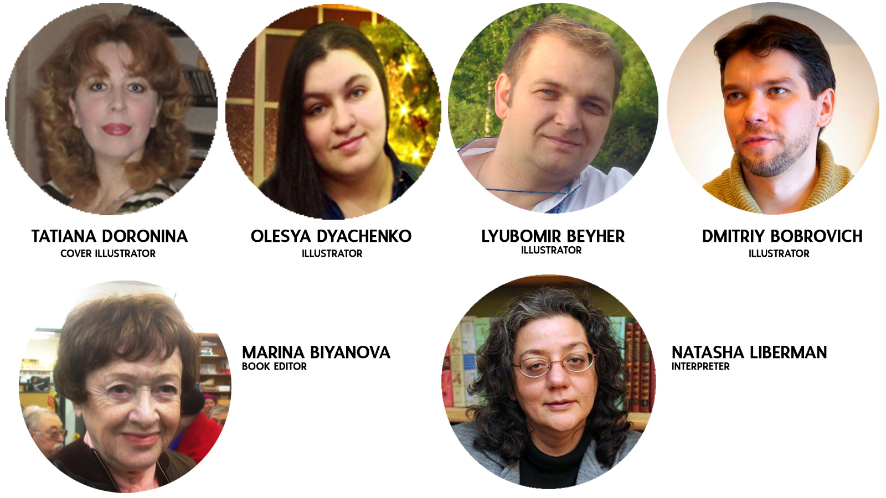
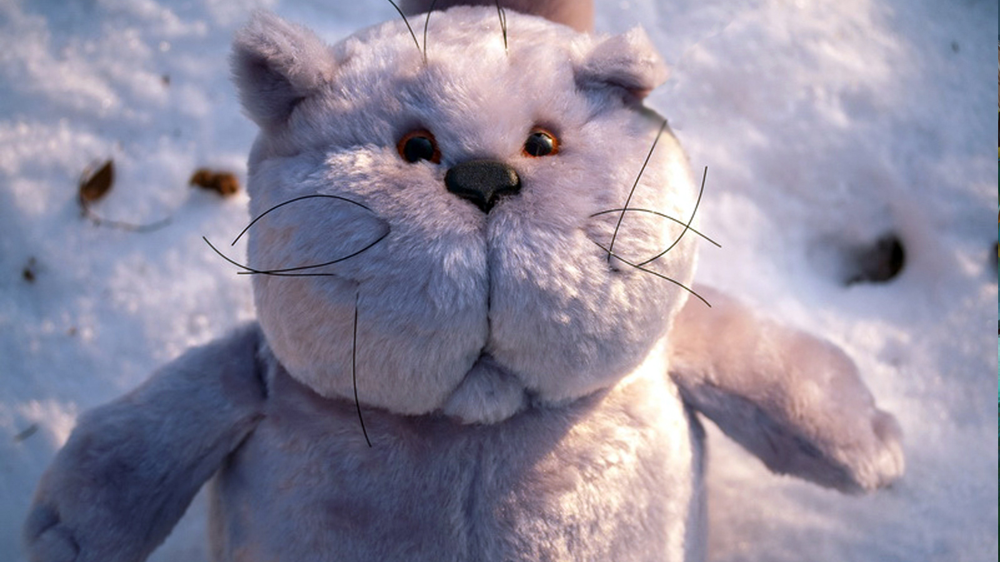
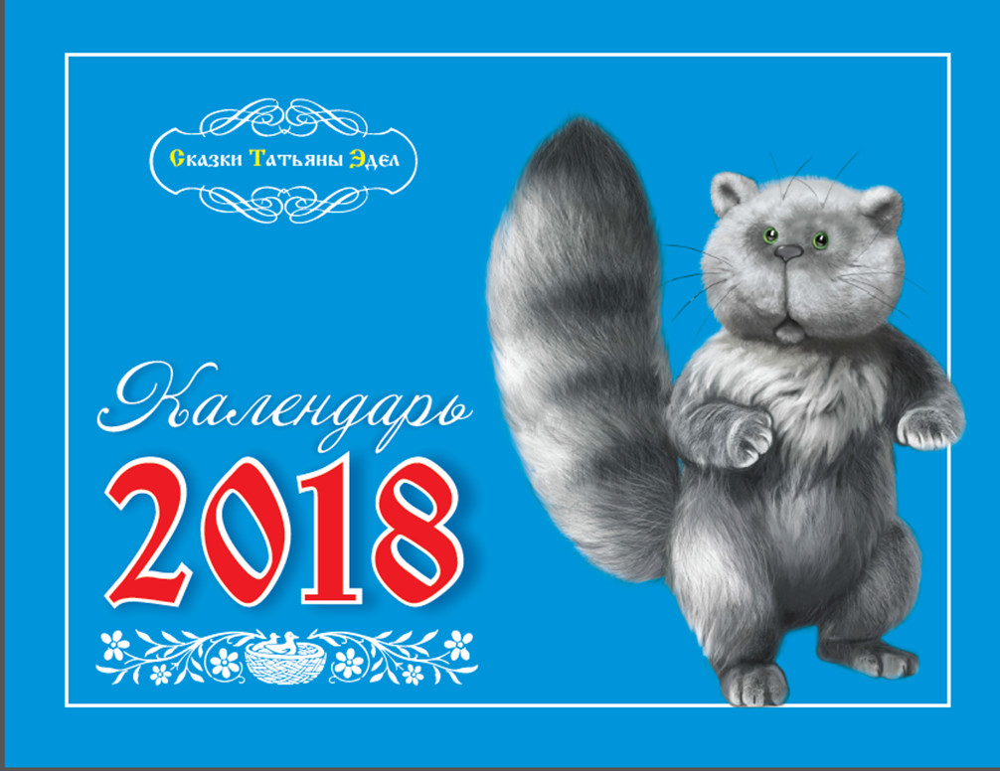
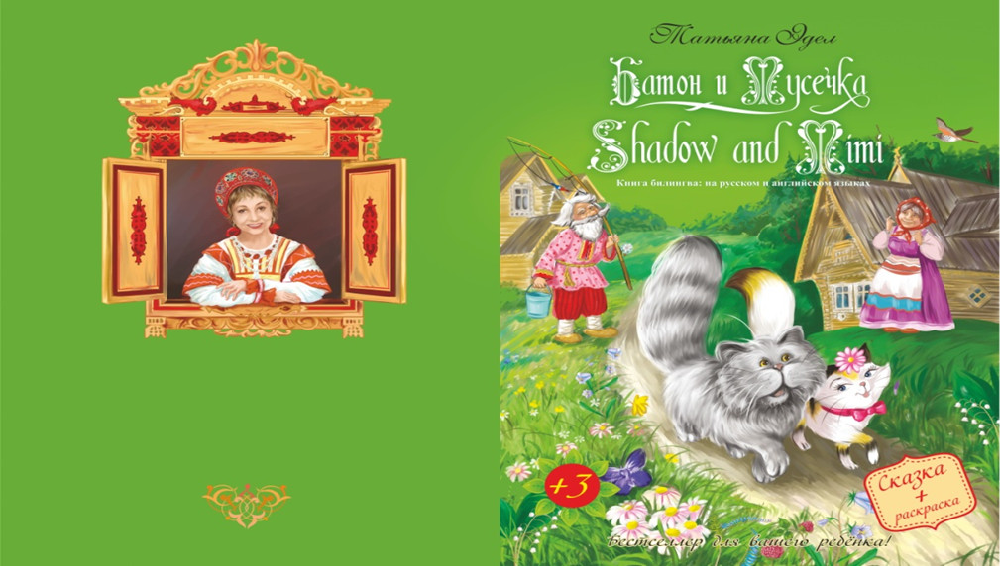
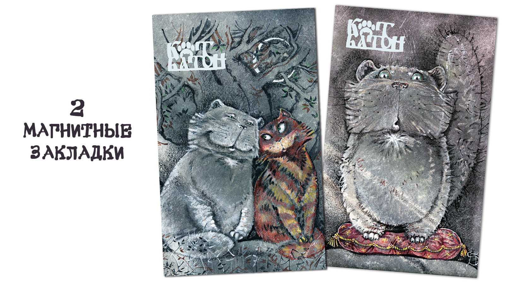

При выборе плана не переживайте по поводу языковой версии книги. По окончании кампании по сбору средств я свяжусь с Вами по электронной почте и уточню, на каком языке Вы хотите получить книгу(и) – на русском или на английском.
Мой герой удивительный, добрый и храбрый кот Батон, который очень любит приключения. Он мечтает о них, сидя у калитки. И однажды путешествующая мимо принцесса забирает его в свой дворец. Батон счастлив, но совсем скоро понимает, что лучше родного дома ничего нет и сбегает из дворца. Он перестает лениться, а всячески старается помочь своей хозяйке!
Книга расскажет вам как он попал в домик бабы Яги, сражался со змеёй, слетал на другую планету, перехитрил Кощея бессмертного и совершил много добрых дел.
Кроме того, вы познакомитесь и с другими героями волшебных сказок, которые дополняют этот удивительный сборник.
Понравились Ваши сказки. Надо сказать, что писать сказки для детей и так по-доброму очень сложно. Очень. Но у Вас получилось. Я уже не говорю про сегодняшнее ТV или прозу, там насилие - норма. А если даже и вспомнить, например, Пушкина: «гроб качается хрустальный», говорящая голова, отравленное яблоко и прочее, все равно используется что-то страшное для усиления интереса, для сюжета. Но Вам это не понадобилось, что особенно приятно для читателя. Большое спасибо за сказки, пишите еще! Прочитаю с удовольствием!
Замечательные сказки, написанные сказочным стилем, с любовью к Батону и к его пожилой хозяйке. Переживал, когда верного кота окружили бродячие собаки. Слава Богу, Батон вернулся домой и его встретила любимая старушка. Думаю, что суть этой сказки в том, что любовь и преданность не могут не быть вознаграждены. Остальные приключения также очаровательны.
Боже! Какие хорошие, добрые у вас сказки. Утром приглашу внучку Лизу почитать о Вашем чудном коте Батоне. Она любит всей душой и котят, и собачат, и жучков, и паучков. Вы очень хорошо пишете о животных. Пусть судьба дарит Вам счастливую жизнь!!!
Любо – дорого почитать такие сказки и взрослым, и детям. ♥
Татьяна Эдел - руководитель проекта и автор пяти книг. Окончила Политехнический институт в Ташкенте и ТУРО колледж в Нью-Йорке. Две из ее книг изданы в России под известными брендами «Новые имена в литературе» и «Сергей Лукьяненко представляет автора». Пишет для взрослых романтическую прозу, для детей добрые сказки. Многократный номинант и победитель конкурсов сказок.
Три прекрасных художника помогли проиллюстрировать книгу: Любомир Бейгер, Алиса Дьяченко и Татьяна Доронина. Образ кота создан Дмитрием Бобровичем. Дмитрий Рябченков разработал дизайн книги. Редактор текстов замечательная Марина Биянова.Я долго искала хорошего переводчика, который бы сумел точно передать мой слог и очень рада, что нашла Наташу Либерман.
Созданы 2 серии одноименного мультфильма. Вы можете посмотреть фильмы на «ютубе» бесплатно. Они на русском языке с английскими субтитрами.
Разработана мягкая игрушка кот Батон
Настенный календарь созданный по моим сказкам.
Еще я подготовила для вас книгу – билингву из трех сказок с картинками для раскрашивания. Существует также электронная книжка-раскраска.
 Нашим детям сейчас очень нужна эта книга: она научит их мечтать, быть добрыми и мудрыми! Радостные лица ваших детей, восторг и искрящиеся глаза, пожалуй, самое главное, что вы получите взамен на ваш шаг поучаствовать в нашем проекте.
Книга отлично подходит для любого возраста, написана простым языком, понятным даже самым маленьким деткам.
Вы можете стать обладателем книг на русском и английском языках, а также обнимать теплую мягкую игрушку
главного героя сказок, изготовленную из экологически чистых материалов.
Купив электронную версию раскраски, вы можете распечатывать и раскрашивать ее многократно. Книга-билингва
поможет в обучении второму языку. В вашем доме станет теплее от доброй книги и красивой необычной игрушки.
Вы можете заказать 10 аудио сказок и ваш ребенок с удовольствием послушает их перед сном, глядя на настенный
календарь с любимыми героями книги.
Мы будем благодарны за вашу финансовую поддержку, которая поможет покрыть расходы на публикацию.
Выберите план, который лучше всего подходит для вас, и поделитесь с друзьями своими приобретениями.
Система Kickstarter функционирует как система предзаказов книги. Сумма финансирования рассчитана с целью покрыть все расходы по печати книг, изготовления подарков и сборы Kickstarter.
Если вы захотите также увидеть следующие серии мультфильмов, напишите мне! tatedel51@gmail.com
Июнь: Обработка данных и перевод денежных средств от Kickstarter. Уточнение у заказчиков на каком языке они хотят получить книги. Отправка электронного альбома-раскраски и закладки для книг, если они не были заказаны вместе с книгой.
Июль: Книга в печати. Изготовление мягких игрушек.
Август: Доставка тавара в США.
Сентябрь: Отправка книги и вознаграждений всем нашим спонсорам.
Книга полностью завершена, и мы можем начать процесс производства, как только средства будут собраны. Производство, доставка и выполнение не могут быть легкими, особенно для проектов Kickstarter - где продукты нужно отправлять сторонникам по всему миру. Пожалуйста, помните, что график - это оценка, и ситуации, находящиеся вне нашего контроля, могут иногда влиять на фактическую дату отправки.
Дети любят яркие книги большого формата с красивыми иллюстрациями. Наша книга будет также в твердой обложке, чтобы могла послужить долго.
Сумма проекта включает в себя затраты на издание книги, почтовые и транспортные расходы, а также изготовление сопутствующих товаров: мягких игрушек, книгу-билингву и закладок и выплату соответствующих налогов и процентов за услуги Kickstarter.
Если вы, наши дорогие спонсоры, поможете нам собрать сумму более $13.000, то мы сможем напечать больший тираж, что несомненно уменьшит цену книги и расширит круг наших читателей.
Конечно! Если Вам не подходит ни один из предложенных планов, пожалуйста, напишите мне по адресу tatedel51@gmail.com , и я смогу оформить Ваш уникальный заказ!
Макет книги готов на 100% . Я выбрала прекрасное издательство, предварительно проведя широкие маркетинговые исследования по качеству печати и себестоимости издания. Фабрика по изготовление мягкой игрушки также готова по первому звонку начать производство.
Я уверена, что мой график проекта реалистичен. В случае любой задержки я незамедлительно буду Вас информировать.
Не забывайте, что условия Kickstarter ВСЕ ИЛИ НИЧЕГО. То есть мы получим деньги на проект только в том случае, если соберем полную сумму 13.000 долларов США. Если мы не набираем этой суммы, то Ваши деньги возвращаются к Вам.